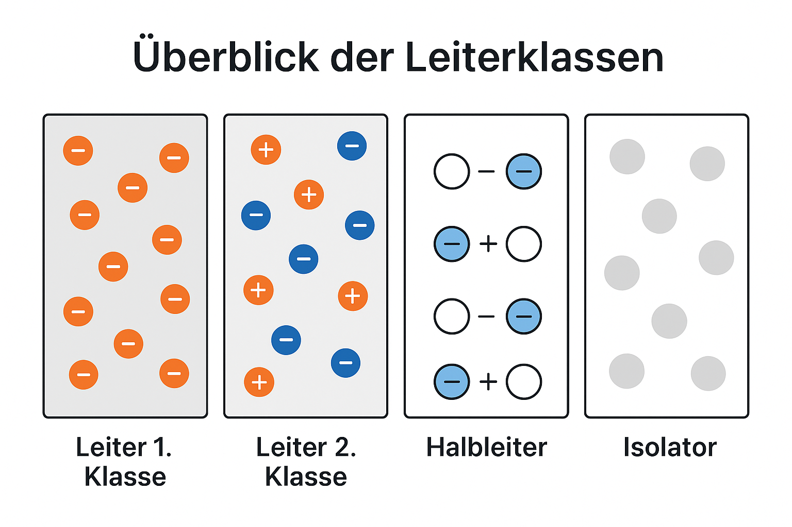

Elektrische Größen
Elektrizität überall
Blitze am Himmel, ein leises Knistern beim Ausziehen eines Pullovers oder die Weiterleitung von Signalen in unserem Nervensystem – all das beruht auf einem gemeinsamen physikalischen Phänomen: elektrische Ladungen in Bewegung.
Ob durch die Luft beim Gewitter oder durch das menschliche Gewebe – elektrische Ströme durchziehen unseren Alltag.
Wir besitzen zwar keine Sinnesorgane für Strom oder Magnetfelder, doch ihre Wirkungen sind allgegenwärtig: Wärme, Licht, Bewegung, Information.
Erst beim Stromausfall wird uns bewusst, wie sehr unsere moderne Welt auf eine zuverlässige Versorgung mit elektrischer Energie angewiesen ist:
Kein Licht, kein Internet, keine Kommunikation, keine Produktion.
Die Elektrizitätslehre beschäftigt sich mit genau diesen Phänomenen – von Ladungen und Strömen, über elektrische Felder, bis hin zu Schwingungen und Wellen.
Sie bildet die Grundlage für viele Schlüsseltechnologien – von der Stromversorgung über Computertechnik bis zur Medizintechnik.
Dieses Kapitel vermittelt die Grundlagen elektrischer Größen, wie sie in der Elektronik und speziell in der Biosignalverarbeitung auftreten. Es werden Ladung, Strom, Spannung, Leistung, Energie und Widerstand behandelt – sowohl physikalisch als auch rechnerisch.
In diesem Kapitel lernst du:
- wie Spannung und Strom zusammenhängen,
- wie Energie transportiert und umgewandelt wird,
- und wie wir elektrische Größen messen, berechnen und anwenden können.
1. Elektrizität und Ladung
Was ist Elektrizität?
Elektrizität ist eine fundamentale Erscheinung der Physik – sie umfasst sowohl ruhende als auch bewegte elektrische Ladungen.
Dazu gehören:
- Elektrostatische Phänomene, wie die Anziehung oder Abstoßung geladener Körper
- Elektrische Ströme, die durch die gerichtete Bewegung von Ladungsträgern entstehen
Diese Ladungsträger sind meist:
- Elektronen (negativ geladen) in Metallen und Halbleitern
- Ionen (positiv oder negativ geladen) in Flüssigkeiten und biologischen Systemen
➕➖ Positive und negative Ladung
- Protonen tragen eine positive Ladung
- Elektronen tragen eine negative Ladung
- Die kleinste existierende Ladungsmenge ist die sogenannte Elementarladung:
- Die Ladung \( Q \) eines Körpers ist immer ein Vielfaches von \( e \):
🧠 Grundregeln der Ladung
- Gleichnamige Ladungen stoßen sich ab
- Ungleichnamige Ladungen ziehen sich an
- Dieses Verhalten folgt aus dem Coulomb-Gesetz (siehe unten)
Bewegung im elektrischen Feld
Ein elektrisches Feld entsteht überall dort, wo sich elektrische Ladungen befinden.
Ladungsträger bewegen sich zielgerichtet im elektrischen Feld – dabei gilt:
- Positive Ladungen bewegen sich vom Pluspol zum Minuspol
- Negative Ladungen (z. B. Elektronen) bewegen sich vom Minuspol zum Pluspol
In Metallen sind es die Elektronen, die als bewegliche negative Ladungsträger den Stromfluss verursachen. Sie fließen tatsächlich vom Minus- zum Pluspol.
⚠️Die technische Stromrichtung wurde historisch jedoch anders definiert: Sie verläuft vom Pluspol zum Minuspol – also entgegen der realen Elektronenbewegung.
Diese Definition ist zwar unlogisch aus heutiger Sicht, wurde aber beibehalten, um die Einheitlichkeit in Formeln und technischen Zeichnungen zu wahren.
Coulomb-Kraft
Zwischen zwei Punktladungen wirkt eine elektrische Kraft:

mit:
- \( F \): Kraft in Newton (N)
- \( Q_1, Q_2 \): Ladungen in Coulomb (C)
- \( r \): Abstand in Metern (m)
- \( k \approx 8{,}99 \cdot 10^9 \, \mathrm{Nm^2/C^2} \)
Übungsaufgabe: Coulomb-Kraft berechnen
Bedeutung in der Biosignalverarbeitung
In biologischen Systemen, z. B. Nervenzellen oder Muskeln, spielen elektrische Ladungen eine entscheidende Rolle:
- Nervenzellen erzeugen Spannungsänderungen durch Ionenbewegung
- Diese Ladungsverschiebungen werden als Biosignale gemessen (z. B. EEG, EMG, EKG)
- Die zugrunde liegenden Prozesse beruhen nicht auf Elektronen, sondern auf Ionen wie Na⁺, K⁺, Ca²⁺
👉 Daher ist das Verständnis von Ladungsträgern und deren Verhalten im elektrischen Feld zentral für die Interpretation biomedizinischer Signale.
🧠 Merksatz:
Elektrizität beginnt mit Ladung.
Ohne Ladung – kein Strom, keine Spannung, keine Wirkung.
2. Leiterklassen
Einleitung: Wie entsteht Stromleitung?
Elektrischer Strom entsteht, wenn sich elektrische Ladungsträger (z. B. Elektronen oder Ionen) in einem Material gerichtet bewegen. Damit das möglich ist, müssen im Material frei bewegliche Ladungsträger vorhanden sein.
Nicht alle Stoffe leiten Strom gleich gut – je nach Art und Beweglichkeit der Ladungsträger unterscheidet man verschiedene Leiterklassen. Diese Einteilung ist wichtig, um das Verhalten von Materialien in der Elektronik und der Biomedizin zu verstehen.
Übersicht der Leiterklassen
| Klasse | Beschreibung |
|---|---|
| Leiter 1. Klasse | Materialien mit frei beweglichen Elektronen – z. B. Metalle |
| Leiter 2. Klasse | Materialien mit beweglichen Ionen – z. B. Elektrolyte, Körperflüssigkeiten |
| Halbleiter | Materialien, deren Leitfähigkeit von äußeren Bedingungen (z. B. Temperatur, Licht, Dotierung) abhängt – z. B. Silizium |
| Isolatoren (Nichtleiter) | Materialien ohne frei bewegliche Ladungsträger – z. B. Glas, Kunststoff |

Beispiele für jede Klasse
| Klasse | Typisches Material | Ladungsträger | Anwendung |
|---|---|---|---|
| Leiter 1. Klasse | Kupfer, Aluminium | Elektronen | Stromkabel, Elektroden |
| Leiter 2. Klasse | Salzlösungen, Blutplasma | Ionen | Biosignalableitung, Ionenaustausch |
| Halbleiter | Silizium, Germanium | Elektronen/Löcher | Sensorik, Mikroelektronik |
| Isolator | Glas, Keramik, Teflon | – | Gehäuse, Isolierung |
➡️ In der Biomedizin sind besonders Leiter 2. Klasse von Bedeutung, da biologische Gewebe elektrische Ströme durch Ionenbewegung leiten. Auch Elektrodenübergänge (z. B. zwischen Elektrode und Haut) sind meist elektrolytisch und erfordern Verständnis der Ionenleitung.
Merke 🧠
- Elektronen bewegen sich in Metallen → Leitung 1. Klasse
- Ionen bewegen sich in Flüssigkeiten → Leitung 2. Klasse
- Halbleiter spielen eine zentrale Rolle in der Sensorik (z. B. photoplethysmographische Sensoren)
- Isolatoren verhindern gezielt eine Stromleitung
3. Elektrischer Strom (I)
Der elektrische Strom ist eine der zentralen physikalischen Größen in der Elektrotechnik und Biomedizin. Er beschreibt die gerichtete Bewegung elektrischer Ladungsträger – je nach Materialart sind das:
- Elektronen in Metallen (Leiter 1. Klasse)
- Ionen in Flüssigkeiten und Geweben (Leiter 2. Klasse)
Definition:
Elektrischer Strom ist die gerichtete Bewegung von elektrischen Ladungen durch ein Medium. Die Stromstärke \( I \) gibt an, wie viele Ladungen pro Sekunde durch einen Querschnitt fließen.
Formel:
$$ I = \frac{Q}{t} $$ Dabei ist: - \( I \): Stromstärke in Ampere (A) - \( Q \): transportierte Ladung in Coulomb (C) - \( t \): Zeit in Sekunden (s)
Ein Ampere entspricht also einem Coulomb pro Sekunde:
$$
1\,\text{A} = 1\,\frac{\text{C}}{\text{s}}
$$
Beispiel aus der Biomedizin
Wenn in einer Nervenzelle eine Ionenverschiebung von \( Q = 3\,\mu\text{C} \) innerhalb von \( t = 5\,\text{ms} \) stattfindet, ergibt sich eine Stromstärke von:
Solche kleinen Ströme treten typischerweise bei Biosignalen (z. B. EMG oder EEG) auf.
Technische vs. physikalische Stromrichtung
- Technische Stromrichtung: definiert vom Pluspol zum Minuspol
- Physikalische Stromrichtung: tatsächliche Bewegung der Elektronen vom Minuspol zum Pluspol
Bedeutung in der Biomedizin:
In biologischen Geweben bewegen sich Ionen (z. B. Na⁺, K⁺, Cl⁻) und erzeugen messbare elektrische Ströme, z. B. bei: - der Signalweiterleitung in Nervenzellen - der Erregung von Muskelzellen - der Messung von Biosignalen (EEG, EMG, EKG)
🧠 Merke:
Der elektrische Strom ist nicht nur ein technisches Phänomen, sondern spielt auch in biologischen Systemen eine zentrale Rolle – dort jedoch durch Ionenbewegung statt Elektronenfluss!
4. Elektrische Spannung (U)
Die elektrische Spannung ist die treibende Kraft, die den elektrischen Strom zum Fließen bringt. Sie entsteht durch eine Ungleichverteilung von elektrischen Ladungen – z. B. zwischen zwei Punkten in einem Stromkreis oder zwischen Zellinnenraum und Außenraum bei biologischen Zellen.
4.1 Elektrisches Potential und Potentialdifferenz
Damit wir die elektrische Spannung besser verstehen, müssen wir den Begriff des elektrischen Potentials klären.
Was ist ein elektrisches Potential?
Das elektrische Potential beschreibt den Energiezustand eines Punktes im elektrischen Feld.
Es gibt an, wie viel elektrische Energie pro Ladungseinheit ein Punkt im Raum besitzt.
- Formelzeichen: \( \varphi \) (Phi)
- Einheit: Volt (V)
- Vergleichbar mit der Höhe in einem Gravitationsfeld (z. B. Höhenlage bei Wasser)
Je höher das Potential, desto mehr „Energie“ steht einer Ladung zur Verfügung.
Was ist eine Potentialdifferenz?
Die elektrische Spannung ist nichts anderes als die Differenz zwischen zwei elektrischen Potentialen:
- Spannung entsteht immer zwischen zwei Punkten
- Es ist irrelevant, wie hoch das absolute Potential ist – nur der Unterschied zählt
- Dieser Unterschied treibt die Ladungen zur Bewegung an
Analogie: Wasserbecken
Stell dir zwei Wasserbecken vor, verbunden durch ein Rohr.
- Becken A liegt höher als Becken B
- Das Wasser fließt vom höheren zum niedrigeren Becken
- Die Höhenunterschied entspricht der Potentialdifferenz
- Der Wasserfluss entspricht dem elektrischen Strom
🧠 Wichtig:
- Ein einzelner Punkt kann kein „Spannung“ haben – nur ein Potential
- Eine Spannung ist immer die Differenz zweier Potentiale
- Ohne Potentialdifferenz gibt es keinen Stromfluss
Beispiel in der Biologie:
- Zellinneres: Potential = –70 mV
- Zelläußeres: Potential = 0 mV (Bezug)
- Spannung über Membran = –70 mV
Das elektrische Potential ermöglicht die gezielte Bewegung von Ionen, z. B. in Nervenzellen.
Elektrische Spannung: Definition
Elektrische Spannung ist die Energie, die benötigt wird, um eine elektrische Ladung zu verschieben.
Sie gibt an, wie viel Energie pro Ladungseinheit aufgewendet (oder freigesetzt) wird.
Formel:
Dabei ist: - \( U \): Spannung in Volt (V) - \( W \): Arbeit oder Energie in Joule (J) - \( Q \): Ladung in Coulomb (C)
1 V = 1 J/C → Ein Volt entspricht einem Joule pro Coulomb.
Technisches Beispiel:
In einem Stromkreis „drückt“ die Spannung die Elektronen durch den Leiter – vergleichbar mit dem Wasserdruck in einem Rohrsystem.
- Spannungsquelle (z. B. Batterie, Netzteil) erzeugt Potentialdifferenz
- Spannung zwischen den Polen bringt Ladungen in Bewegung → Stromfluss
Biomedizinische Relevanz:
In biologischen Systemen spricht man häufig vom Membranpotential:
- An der Zellmembran besteht eine Spannung von ca. –70 mV (Ruhepotential)
- Diese Spannung entsteht durch die ungleiche Verteilung von Ionen (z. B. Na⁺, K⁺, Cl⁻) innen und außen
- Bei Aktionspotentialen ändern sich diese Spannungen sprunghaft (z. B. auf +30 mV)
Diese Spannungsänderungen sind Grundlage für: - Nervenreizleitung - Muskelkontraktion - Messung von Biosignalen (EEG, EKG, EMG)
Typische Spannungen im Vergleich:
| Anwendung | Typische Spannung |
|---|---|
| EKG (Herz) | 1 mV – 5 mV |
| EEG (Gehirn) | 10 µV – 100 µV |
| Muskelaktivität | 0,1 mV – 5 mV |
| Batterie (AA) | 1,5 V |
| Haushaltsnetz | 230 V |
🧠 Merke:
Spannung ist die Ursache, Strom ist die Wirkung. Ohne Spannung kein Stromfluss!
Interaktive Übung: Strom, Ladung, Zeit berechnen
5. Elektrische Energie (E)
Was ist elektrische Energie?
Elektrische Energie ist die Fähigkeit eines elektrischen Systems, Arbeit zu verrichten, z. B. einen Muskel zu stimulieren, ein Signal zu übertragen oder ein Gerät zu betreiben. Sie wird überall dort gebraucht, wo elektrische Ladungen bewegt werden.
In der Biomedizin ist elektrische Energie z. B. relevant in:
- Stimulationssystemen (z. B. Herzschrittmacher, TENS)
- Biosensoren (z. B. Glukosemessgeräte)
- Zellbiologie (ATP als chemische Energiequelle)
Einheit
Die Einheit der elektrischen Energie ist:
- Joule [J], was einer Wattsekunde [Ws] entspricht.
Formel
Die elektrische Energie lässt sich berechnen mit:
Dabei ist:
- \( E \): Energie in Joule (J)
- \( U \): Spannung in Volt (V)
- \( I \): Stromstärke in Ampere (A)
- \( t \): Zeit in Sekunden (s)
Beispiel aus dem Bereich BMSV
Ein Elektrostimulator liefert 15 V bei 30 mA über einen Zeitraum von 10 s.
Wie viel Energie wird übertragen?
🧠 Merksatz
Je höher die Spannung, je mehr Strom fließt und je länger – desto mehr Energie wird benötigt oder geliefert.
Beispiel aus der Zellbiologie
Zellen speichern Energie chemisch in ATP.
Die Umsetzung eines ATP-Moleküls liefert etwa:
Auch dies kann im Sinne der Energiebetrachtung in elektrischen Systemen interpretiert werden – z. B. bei der Reizweiterleitung oder Muskelkontraktion.
Interaktive Übung: Berechne die elektrische Energie
6. Elektrische Leistung (P)
- Definition: Die elektrische Leistung gibt an, wie viel Energie pro Zeit umgesetzt oder übertragen wird.
- Einheit: Watt [W]
(1 W = 1 J/s)
⚙️ Formeln
Die elektrische Leistung lässt sich auf verschiedene Arten berechnen:
Alternativ, unter Verwendung von Ohm’schem Gesetz:
🧠 Merksatz
Je größer die Spannung oder der Strom, desto höher ist die Leistung.
Eine hohe Leistung führt oft zu Wärmeentwicklung – das ist besonders in der Medizintechnik und bei Implantaten kritisch.
Beispiel aus der Biomedizin
Eine Elektrode erzeugt bei einer Spannung von \( 1{,}5\,\text{V} \) einen Strom von \( 0{,}01\,\text{A} \).
Die elektrische Leistung beträgt:
→ Solche Leistungen sind typisch für Sensoren oder kleine Stimulationsgeräte.
Einheit
- Die Leistung wird in Watt [W] angegeben.
- Umrechnung:
Übungsaufgabe: Leistung berechnen
7. Elektrischer Widerstand (R)
-
Definition:
Der elektrische Widerstand gibt an, wie stark ein elektrisches Bauteil oder Material den elektrischen Stromfluss behindert. -
Einheit:
Ohm [Ω]
🧠Formel (Ohmsches Gesetz):
Dabei ist:
- \( R \): Widerstand in Ohm [Ω]
- \( U \): Spannung in Volt [V]
- \( I \): Stromstärke in Ampere [A]
Das Ohmsche Gesetz – einfach erklärt
Das Ohmsche Gesetz beschreibt den Zusammenhang zwischen Spannung (U), Stromstärke (I) und Widerstand (R) in einem elektrischen Leiter. Es wurde vom Physiker Georg Simon Ohm 1821 experimentell ermittelt und lautet:
⚠️ Das bedeutet:
- Je größer die Spannung, desto mehr Strom fließt – wenn der Widerstand gleich bleibt.
- Je größer der Widerstand, desto weniger Strom fließt – bei gleicher Spannung.
Man kann die Formel auch umstellen:
$$ R = \frac{U}{I} $$ $$ I = \frac{U}{R} $$
Beispiel:
Wenn eine Spannung von \( 6\,\text{V} \) an einem Widerstand von \( 2\,\Omega \) anliegt, ergibt sich:
Beispiel aus der Biomedizin
Ein Hautwiderstand wird mit einer angelegten Spannung von \( U = 3\,\text{V} \) gemessen, wobei ein Strom von \( I = 0{,}5\,\text{mA} \) fließt:
➡️ In der Biomedizin ist der Hautwiderstand z. B. beim Biofeedback oder der Galvanischen Hautreaktion (GSR) von Bedeutung.
🧠 Merksatz
Je größer der Widerstand, desto kleiner der Strom bei gegebener Spannung – und umgekehrt.
Wovon hängt der Widerstand ab?
Der Widerstand eines Bauteils oder Materials hängt ab von:
- Material (Kupfer, Kohlenstoff, Gewebe…)
- Länge des Leiters
- Querschnitt des Leiters
- Temperatur (besonders bei Halbleitern und Elektrolyten)
Typische Widerstandswerte
| Anwendung / Material | Typischer Widerstand |
|---|---|
| Haut (trocken) | 10–100 kΩ und mehr |
| Haut (feucht) | 1–10 kΩ |
| Kupferdraht (kurz) | < 1 Ω |
| Elektrolytische Lösung | 100–1000 Ω |
| Isoliermaterial (z. B. Teflon) | > 10 GΩ |
Interaktive Übung: Widerstand berechnen
8. Übersicht: Formelzeichen und Einheiten
| Größe | Formelzeichen | Einheit |
|---|---|---|
| Spannung | U | Volt (V) |
| Strom | I | Ampere (A) |
| Widerstand | R | Ohm (Ω) |
| Energie | E | Joule (J) |
| Leistung | P | Watt (W) |
9. Grundgleichungen
-
Ohmsches Gesetz:
$$ U = R \cdot I $$ $$ I = \frac{U}{R} $$ $$ R = \frac{U}{I} $$ -
Leistung: $$ P = U \cdot I = I^2 \cdot R = \frac{U^2}{R} $$
-
Energie: $$ E = P \cdot t $$